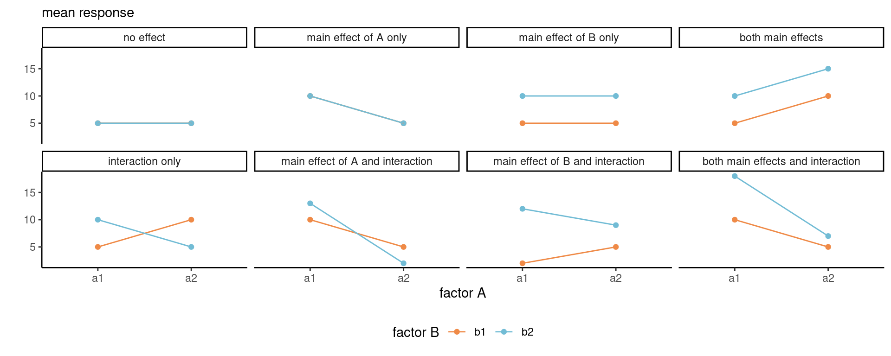

5 Complete factorial designs
We next consider experiments and designs in which there are multiple factors being manipulated by the experimenter simultaneously. Before jumping into the statistical analysis, let us discuss briefly some examples that will be covered in the sequel.
Example 5.1 (Psychological ownership of borrowed money) Supplemental Study 5 from Sharma, Tully, and Cryder (2021) checks the psychological perception of borrowing money depending on the label. The authors conducted a 2 by 2 between-subject comparison (two-way ANOVA) varying the type of debt (whether the money was advertised as credit or loan) and the type of purchase the latter would be used for (discretionary spending or need). The response is the average of the likelihood and interest in the product, both measured using a 9 point Likert scale from 1 to 9.
Example 5.2 (Spatial orientation shrinks and expands psychological distance) Maglio and Polman (2014) measured the subjective distance on travel based on the direction of travel. They conducted an experiment in the Toronto subway green line, asking commuters from Bay station to answer the question “How far away does the [name] station feel to you?” using a 7 point Likert scale ranging from very close (1) to very far (7). The stations name were one of Spadina, St. George, Bloor–Yonge and Sherbourne (from West to East).
As there are four stations and two directions of travel (a 4 by 2 design), the scientific question of interest for subjective measures of distance would consist of perceiving differently the distance depending on the direction of travel. We could also wonder whether destinations that are two stations away from Bay (Spadina and Sherbourne) would be considered equidistant, and similarly for the other two.
5.1 Efficiency of multiway analysis of variance.
Consider the setting of Sharma, Tully, and Cryder (2021) and suppose we want to check the impact of debt and collect a certain number of observations in each group. If we suspected the label had an influence, we could run a one-way analysis of variance for each spending type separately (thus, two one-way ANOVA each with two groups). We could do likewise if we wanted instead to focus on whether the spending was discretionary in nature or not, for each label: together, this would give a total of eight sets of observations. Combining the two factors allows us to halve the number of groups/samples we collect in this simple setting: this highlights the efficiency of running an experiment modifying all of these instances at once, over a series of one-way analysis of variance. This concept extends to higher dimension when we manipulate two or more factors. Factorial designs allow us to study the impact of multiple variables simultaneously with fewer overall observations.
The drawback is that as we increase the number of factors, the total number of subgroups increases: with a complete design1 and with factors \(A\), \(B\), \(C\), etc. with \(n_a\), \(n_b\), \(n_c\), \(\ldots\) levels, we have a total of \(n_a\times n_b \times n_c \times \cdots\) combinations and the number of observations needed to efficiently measure the group means increases quickly. This is the curse of dimensionality: the larger the number of experimental treatments manipulated together, the larger the sample size needed. A more efficient approach, which we will cover in later section, relies on measuring multiple observations from the same experimental units, for example by giving multiple tasks (randomly ordered) to participants.
Intrinsically, the multiway factorial design model description does not change relative to a one-way design: the analysis of variance describes the sample mean for the response in each subgroup,
Consider a two-way analysis of variance model. This is a linear model with two factors, \(A\) and \(B\), with respectively \(n_a\) and \(n_b\) levels. The response \(Y_{ijk}\) of the \(k\)th measurement in group \((a_i, b_j)\) is \[ \underset{\text{response}\vphantom{b}}{Y_{ijk}} = \underset{\text{subgroup mean}}{\mu_{ij}} + \underset{\text{error term}}{\varepsilon_{ijk}} \tag{5.1}\] where
- \(Y_{ijk}\) is the \(k\)th replicate for \(i\)th level of factor \(A\) and \(j\)th level of factor \(B\)
- \(\mu_{ij}\) is the average response of measurements in group \((a_i, b_j)\)
- \(\varepsilon_{ijk}\) are independent error terms with mean zero and standard deviation \(\sigma\).
This, it turns out, is a special case of linear regression model. We could build contrasts for comparing group averages, but it will more convenient to reparametrize the model so that hypotheses of interest are directly expressed in terms of the parameters.
For example, in the Maglio and Polman (2014) study, we could gather observations for each factor combination in a table, where direction is the row and station the column.
\(A\) station |
\(B\) direction |
\(b_1\) (east) |
\(b_2\) (west) |
row mean |
|---|---|---|---|---|
\(a_1\) (Spadina) |
\(\mu_{11}\) | \(\mu_{12}\) | \(\mu_{1.}\) | |
\(a_2\) (St. George) |
\(\mu_{21}\) | \(\mu_{22}\) | \(\mu_{2.}\) | |
\(a_3\) (Bloor-Yonge) |
\(\mu_{31}\) | \(\mu_{32}\) | \(\mu_{3.}\) | |
\(a_4\) (Sherbourne) |
\(\mu_{41}\) | \(\mu_{42}\) | \(\mu_{4.}\) | |
| column mean | \(\mu_{.1}\) | \(\mu_{.2}\) | \(\mu\) |
The \(i\)th row mean represents the average response across all levels of \(B\), \(\mu_{i.} = (\mu_{i1} + \cdots + \mu_{in_b})/n_b\) and similarly for the average of the \(j\)th column, \(\mu_{.j} = (\mu_{1j} + \cdots + \mu_{n_aj})/n_a.\) Finally, the overall average is \[\mu = \frac{\sum_{i=1}^{n_a} \sum_{j=1}^{n_b} \mu_{ij}}{n_an_b}.\]
Each subgroup average \(\mu_{ij}\) will be estimated as the sample mean of observations in their group and we would use the above formulae to obtain estimates of the row, column and overall means \(\widehat{\mu}_{i.}\), \(\widehat{\mu}_{.j}\) and \(\widehat{\mu}\). If the sample is balanced, meaning the number of observations is the same, these will be the same as summing over all observations in a row, column or table and then averaging. In general setup, however, we will give equal weight to each subgroup average.
5.2 Interactions
Table tbl-cellmeansMP14 shows the individual mean of each subgroup. From these, we may be interested in looking at the experiment as a single one-way analysis of variance model with eight subgroups, or as a series of one-way analysis of variance with either direction or station as sole factor.
We will use particular terminology to refer to these:
- simple effects: difference between levels of one in a fixed combination of others. Simple effects are comparing cell averages within a given row or column.
- main effects: differences relative to average for each condition of a factor. Main effects are row/column averages.
- interaction effects: when simple effects differ depending on levels of another factor. Interactions effects are difference relative to the row or column average.
In other words, an interaction occurs when some experimental factors, when coupled together, have different impacts than the superposition of each. An interaction between two factors occurs when the average effect of one independent variable depends on the level of the other.
If there is a significant interaction, the main effects are not of interest since they are misleading. Rather, we will compute the simple effects by making the comparison one at level at the time.
In our example of Maglio and Polman (2014), a simple effect would be comparing the distance between Spadina and Sherbourne for east. The main effect for the direction would be the average perceived distance for east and for west. Finally, the interaction would measure how much these differ by station depending on direction.
To better understand, we consider the average response and suppose we have access to the true population average for each sub-treatment. We can then represent the population using a line graph with the two factors, one being mapped to color and another to the \(x\)-axis. Figure fig-2by2 shows what happens under all possible scenarios with a 2 by 2 design. When there is no overall effect, the mean is constant. If there isn’t a main effect of \(A\), the average of the two mean response for \(a_1\) and \(a_2\) are the same, etc. Interactions are depicted by non-parallel lines.
It’s clear from Figure fig-2by2 that looking only at the average of \(A\) alone (the main effect) isn’t instructive when we are in the presence of an interaction: rather, we should be comparing the values of \(A\) for \(b_1\) separately than those for \(b_2\), and vice-versa, using simple effects, otherwise our conclusions may be misleading.
Example 5.3 (Interaction plots for Maglio and Polman (2014)) The hypothesis of interest is the interaction; for the time being, we can simply plot the average per group. Since the summary statistics can hide important information such as the uncertainty, we add 95% confidence intervals for the subgroup averages and superimpose jittered observations to show the spread of the data. Based on Figure fig-interactionplotMP, there appears to be at least an interaction between station and direction of travel, in addition to a main effect for station. Formal hypothesis testing can help check this intuition.

5.3 Model parametrization
The model parametrized in terms of subgroup or cell average is okay in Equation eq-twowayasoneway, but it doesn’t help us if we want to check for the presence of main effects and interaction, even if it would be possible to specify the contrasts required to test these hypotheses. We can however express the model in terms of main effects and interactions.
We consider the alternative formulation \[\begin{align*} Y_{ijk} = \mu + \alpha_i + \beta_j + (\alpha\beta)_{ij} + \varepsilon_{ijk}, \end{align*}\] where
- \(\mu\) is the average of all subgroup averages, termed overall mean.
- \(\alpha_i = \mu_{i.} - \mu\) is the mean of level \(A_i\) minus the overall mean.
- \(\beta_j = \mu_{.j} - \mu\) is the mean of level \(B_j\) minus overall mean.
- \((\alpha\beta)_{ij} = \mu_{ij} - \mu_{i.} - \mu_{.j} + \mu\) is the interaction term for \(A_i\) and \(B_j\) which encodes the effect of both variable not already captured by the main effects.
A rapid calculation shows that there are more coefficients than the number of cells and subgroups (\(n_an_b\) cells overall) in our table. The model is overparametrized: to get away with this, we impose constraints to remove redundancies. The idea is that if we know \(n_a-1\) of the mean for factor \(A\) and the global average is a combination of these, we can deduce the value for the last row mean. The model formulation in terms of difference from the global average or main effect ensures that we can test for main effects for factor \(A\) by setting \(\mathscr{H}_0: \alpha_1 = \cdots = \alpha_{n_a-1}=0\). The \(1 + n_a + n_b\) sum to zero constraints, \[\sum_{i=1}^{n_a} \alpha_i=0, \quad \sum_{j=1}^{n_b} \beta_j=0, \quad \sum_{j=1}^{n_b} (\alpha\beta)_{ij}=0, \quad \sum_{i=1}^{n_a} (\alpha\beta)_{ij}=0,\] restore identifiability.
The redundancy in information, due to the fact main effects are expressible as row and column averages, and the overall mean as the average of all observations, will arise again when we consider degrees of freedom for tests.
To be continued…
Example 5.4 (Testing for Psychological ownership of borrowed money) Sharma, Tully, and Cryder (2021) first proceeded with the test for the interaction. Since there are one global average and two main effect (additional difference in average for both factors debttype and purchase), the interaction involves one degree of freedom since we go from a model with three parameters describing the mean to one that has a different average for each of the four subgroups.
The reason why this is first test to carry out is that if the effect of one factor depends on the level of the other, as shown in Figure fig-2by2, then we need to compare the label of debt type separately for each type of purchase and vice-versa using simple effects. If the interaction on the contrary isn’t significant, then we could pool observations instead and average across either of the two factors, resulting in the marginal comparisons with the main effects.
Fitting the model including the interaction between factors ensures that we keep the additivity assumption and that our conclusions aren’t misleading: the price to pay is additional mean parameters to be estimated, which isn’t an issue if you collect enough data, but can be critical when data collection is extremely costly and only a few runs are allowed.
In R, we include both factors in a formula as response ~ factorA * factorB, the * symbol indicating that both are allowed to interact; in the main effect model, we would use instead + to reflect that the effects of both factors add up.
# Analysing Supplementary Study 5
# of Sharma, Tully, and Cryder (2021)
data(STC21_SS5, package = "hecedsm")
mod <- aov(likelihood ~ purchase*debttype,
data = STC21_SS5)
model.tables(mod, type = "means")Tables of means
Grand mean
4.879747
purchase
discretionary need
4.182 5.579
rep 751.000 750.000
debttype
credit loan
5.127 4.631
rep 753.000 748.000
purchase:debttype
debttype
purchase credit loan
discretionary 4.5 3.8
rep 392.0 359.0
need 5.7 5.4
rep 361.0 389.0# Analysis of variance reveals
# non-significant interaction
# of purchase and type
car::Anova(mod, type = 3)Anova Table (Type III tests)
Response: likelihood
Sum Sq Df F value Pr(>F)
(Intercept) 7974.0 1 1040.9610 < 2.2e-16 ***
purchase 282.8 1 36.9137 1.563e-09 ***
debttype 88.5 1 11.5483 0.0006959 ***
purchase:debttype 13.7 1 1.7852 0.1817132
Residuals 11467.4 1497
---
Signif. codes: 0 '***' 0.001 '**' 0.01 '*' 0.05 '.' 0.1 ' ' 1# Main effects
emmeans::emmeans(mod,
specs = "debttype",
contr = "pairwise")NOTE: Results may be misleading due to involvement in interactions$emmeans
debttype emmean SE df lower.CL upper.CL
credit 5.12 0.101 1497 4.93 5.32
loan 4.63 0.101 1497 4.43 4.83
Results are averaged over the levels of: purchase
Confidence level used: 0.95
$contrasts
contrast estimate SE df t.ratio p.value
credit - loan 0.496 0.143 1497 3.469 0.0005
Results are averaged over the levels of: purchase # Pairwise comparisons within levels of purchase
# Simple effect
emmeans::emmeans(mod,
specs = c("purchase", "debttype"),
by = "purchase",
contr = "pairwise")$emmeans
purchase = discretionary:
debttype emmean SE df lower.CL upper.CL
credit 4.51 0.140 1497 4.24 4.78
loan 3.82 0.146 1497 3.54 4.11
purchase = need:
debttype emmean SE df lower.CL upper.CL
credit 5.74 0.146 1497 5.45 6.02
loan 5.43 0.140 1497 5.16 5.71
Confidence level used: 0.95
$contrasts
purchase = discretionary:
contrast estimate SE df t.ratio p.value
credit - loan 0.687 0.202 1497 3.398 0.0007
purchase = need:
contrast estimate SE df t.ratio p.value
credit - loan 0.305 0.202 1497 1.508 0.1318In the analysis of variance table, we focus exclusively on the last line with the sum of squares for purchase:debttype. The \(F\) statistic is 1.79; using the \(\mathsf{F}\) (1, 1497) distribution as benchmark, we obtain a \(p\)-value of 0.18 so there is no evidence the effect of purchase depends on debt type.
We can thus pool data and look at the effect of debt type (loan or credit) overall by combining the results for all purchase types, one of the planned comparison reported in the Supplementary material. To do this in R with the emmeans package, we use the emmeans function and we quote the factor of interest (i.e., the one we want to keep) in specs. By default, this will compute the estimate marginal means: the contr = "pairwise" indicates that we want the difference between the two, which gives us the contrasts.
To get the simple effects, we give both variables in specs as factors for which to compute subgroup means, then set additionally the by command to specify which variable we want separate results for. We get the difference in average between credit and loan labels for each purchase type along with the \(t\) statistics for the marginal contrast and the \(p\)-value. The simple effects suggest that the label has an impact on perception only for discretionary expenses rather than needed ones, which runs counter-intuitively with the lack of interaction.
Summary
- Complete factorial designs consist of experiments in which we manipulate multiple experimental factors at once and collect observations for each subgroup.
- Factorial designs are more efficient than running repeatedly one-way analysis of variance with the same sample size per group.
- Interactions occur when the effect of a variable depends on the levels of the others.
- Interaction plots (group average per group) can help capture this difference, but beware of overinterpretation in small samples.
- If there is an interaction, we consider differences and contrasts for each level of the other factor (simple effects).
- If there is no interaction, we can pool observations and look at main effects.
- A multiway analysis of variance can be treated as a one-way analysis of variance by collapsing categories; however, only specific contrasts will be of interest.
- The number of observations increases quickly with the dimension as we increase the number of factors considered.
Maglio, Sam J., and Evan Polman. 2014. “Spatial Orientation Shrinks and Expands Psychological Distance.” Psychological Science 25 (7): 1345–52. https://doi.org/10.1177/0956797614530571.
Sharma, Eesha, Stephanie Tully, and Cynthia Cryder. 2021. “Psychological Ownership of (Borrowed) Money.” Journal of Marketing Research 58 (3): 497–514. https://doi.org/10.1177/0022243721993816.
By complete design, it is meant that we gather observations for each subcategory.↩︎